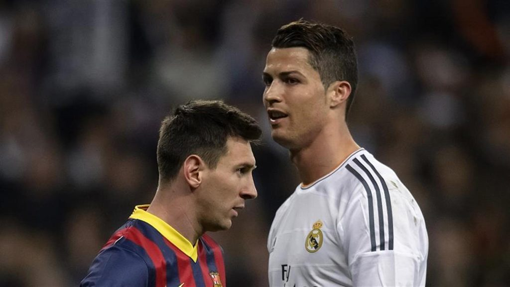
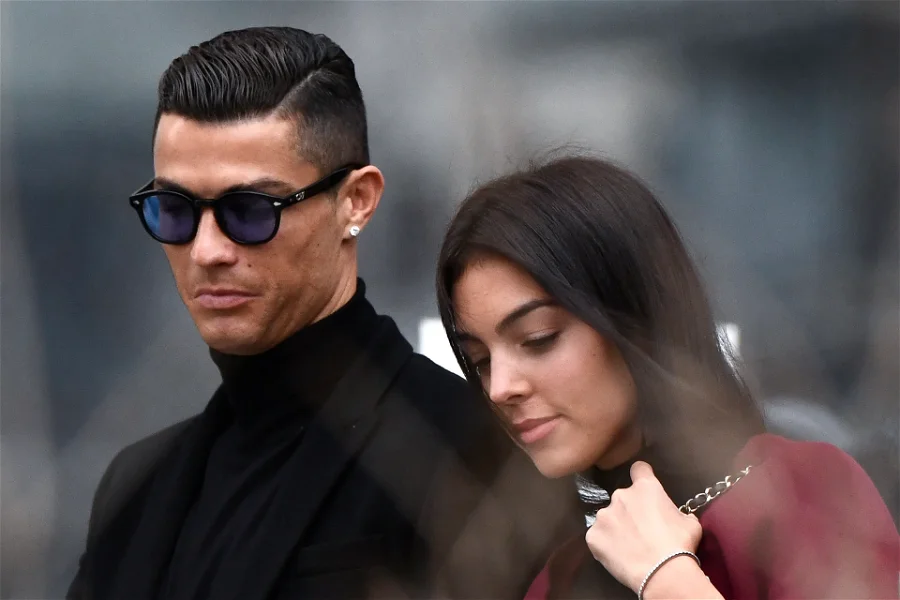
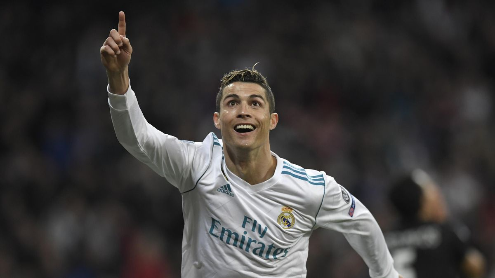

CRISTIANO RONALDO VS LIONEL MESSI | Everything about Ronaldo and Messi sets the perfect stage for their perceived rivalry. Ronaldo is a brash and exuberant performer who is powerfully built and has a massive ego. Messi is a shy and a humble person who is shorter and has a more compact physique. On the field, Ronaldo and Messi spearhead the long-standing El-Clasico rivalry for Real Madrid and Barcelona, respectively. And individual football records continually get broken by both. In many ways, this rivalry is a parallel of the Federer – Nadal rivalry in tennis. Sheer talent vs determination and grit. Well, we’ve finally found five reasons why Ronaldo can be considered better than Messi…
Outside of the perfectly balanced Barcelona strategy, Messi’s defects could, potentially, be exposed. Conversely, Ronaldo is arguably more rounded than any other player in world football. With greater speed than Messi (33.6 kph compared to 32.5kph), greater strength, greater use of his weak foot, and an outstanding heading ability (Ronaldo has scored from 8.5 feet in the air), his characteristics have been carved with greater attention to detail.
Meanwhile CR7 has been linked with lots of women over the years, but none has been able to engulf his heart like the pretty model and mother of his twins, Georgina Rodriguez.
Messi has primarily focused on the Spanish League and has been extremely successful with his team, Barcelona. Ronaldo has dipped his toes in both the Spanish League and the English Premier League with great success. During his six-season tenure in the English Premier League, Ronaldo lent his services for Manchester United. After a three-season teething period, Ronaldo helped Manchester United win three Premier League titles in a row from 2006 to 2008. This was before transferring to Real Madrid and trading in England for Spain. Rather than go through a slump, Ronaldo managed to help Real Madrid break through Messi’s Barcelona team’s prior dominance in La Liga. They won the Spanish League title.
ГУГОЛ